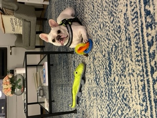

This is my dog, Sully. He is a 4 year old French Bulldog who has spent his whole life on the upper west side (UWS) in Manhattan, which makes him more of a New Yorker than myself. Sully has a lot of strong opinions, as a New Yorker does, and he wants to share them with you. That is why he asked me to create this website. If you ever see Sully on the street, he will try to bring you to one of the two main parks on the UWS, after jumping all over you.
Sully lives near many parks and he requires at least one trip to the park every day.
Riverside park has many dog friendly spaces, including dog runs, designated off leash spaces, and paved paths.